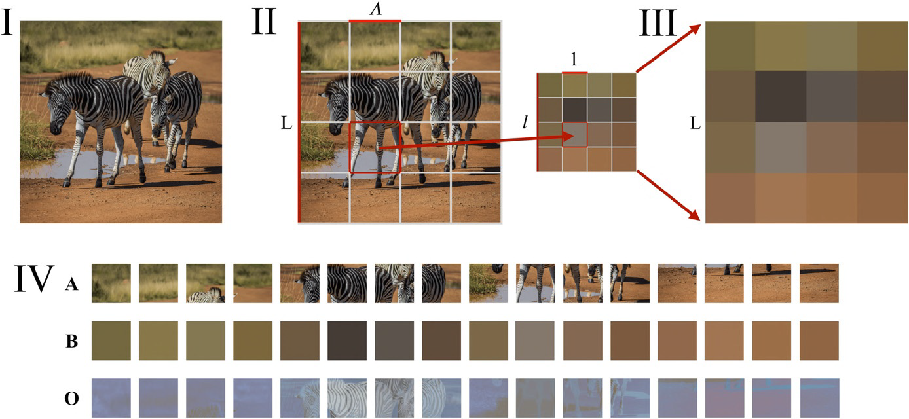
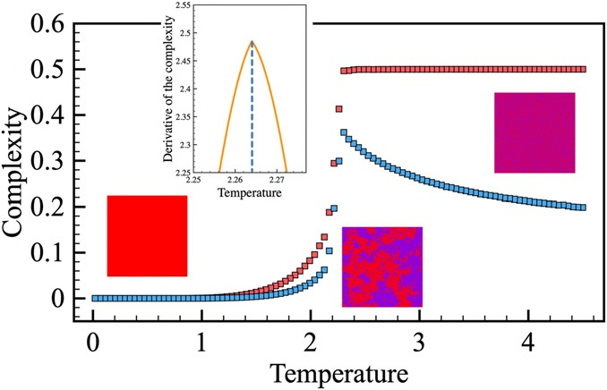
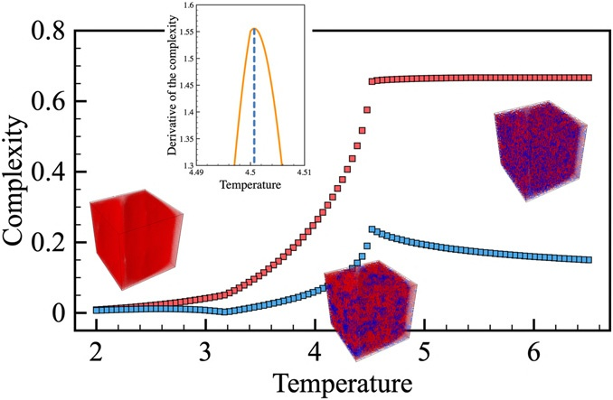

本篇论文基于重整化群, 给出了一种定量描述多层级系统结构复杂度的普适方法
对系统复杂度的定义
目前有一个非常著名的计算复杂度的理论, 叫做 Kolmogorov 复杂度, 其指的是用于描述一段信息所需的最小编码长度. Kolmogorov 复杂度计算很困难, 而且目前并没有一个通用的方式去计算 Kolmogorov 复杂度
我们在直觉上认为: 一个系统的结构复杂度应与其层级结构和各层级之间的联系有关
进一步地, 对于描述复杂系统的结构复杂度, 我们认为满足如下条件的定义是好的:
- 能够汇总对象中存在的不同层级的信息
- 在分析层面上有良好定义, 以便对于不同种类的对象都可以进行计算, 而无需做出主观选择和决定
- 具有稳健性和稳定性, 即系统中的噪点对整体结果影响很小
- 对于完全有序和完全无序的结构, 其计算结果都应该很小
定义
基于 RG-Flow, 模式可用在定义域 D 上的函数 f(x) 来表示, 如对于灰度图而言, f(x) 即为在二维矩形上的实值函数
规定若L为模式的大小, Λ 为过滤器的宽度, 则 fL(X) 对应为重整化时的模式, fΛ(x) 为最粗粒度版本的模式
若定义域连续, 则重整化变换可用 f(x) 在过滤器 Λ 下的卷积描述, 层级 λ 下的模式 fλ(x) 和稍粗一些的模式 fλ+dλ(x) 之间的差异 Cλ 定义如下:
Cλ=∣∣∣∣∣⟨fλ(x)∣fλ+dλ(x)⟩−21(⟨fλ(x)∣fλ(x)⟩+⟨fλ+dλ(x)∣fλ+dλ(x)⟩)∣∣∣∣∣=21∫D(fλ+dλ(x)−fλ(x))2dx(1)
其中 ⟨f(x)∣g(x)⟩:=∫Dd(xf(x)g(x))
把所有层级的差异累加, 即为该多层级系统的结构复杂度 C, 即:
C:=λ∑Cλ(2)
一些例子
2D 图像
假设图像的是 L×L 的图像. 如果是 RGB 图像, 则模式 (像素) 即为[−1,1]3内的向量 (x,y,z), 其中 x,y,z 分别表示红色, 绿色, 蓝色对该像素的贡献, −1表示没有贡献, 1表示贡献达到其最大值. 我们选用最简单的缩放作为重整化方式:
令 si,j(k) 为第 k 次迭代时在位置 (i,j) 处的像素, 此时迭代前图像被分成 Λ×Λ 个小块, 则:
si,j(k):=Λ21l∑m∑sΛi+l,Λj+m(k−1)
其中 l,m 表示对其对应位置进行的枚举
令
Ok,k−1:=Lk−121(i=1∑Lkj=1∑Lksi,j(k))(l=1∑Λm=1∑ΛsΛi+l,Λj+m(k−1))(3)
对本例有
Ok,k−1=Lk−12Λ2Lk2Ok,k=Ok,k(4)
所以在给定参数 N,L,Λ 时, 图像的结构复杂度为:
C=k=0∑N−1Ck=k=0∑N−1∣∣∣∣∣Ok+1,k−21(Ok,k+Ok+1,k+1)∣∣∣∣∣=21k=0∑N−1∣Ok+1,k+1−Ok,k∣(5)
其中:

图 1: I 为原始图像, II 为将图像分成 Λ×Λ 的小块, III 为对图像进行重整化, 并放大为 L×L 的图像 (本例中 l:=ΛL=4,Λ=2). A 和 B 分别为重整化前和重整化后各小块的图像情况, O 为 A 和 B 对应像素的差. 当取 N=10,Λ=2 时, C=0.163859
图 2: 自然图像 (A-C) 和人工图像 (D-F) 的结构复杂度比对. 图像大小均为 4096×4096. 在 N=10,Λ=2 的情况下, 结构复杂度结果如下表:
| 图像 | C | 图像 | C |
|---|
| A | 0.078648 | D | 0.107577 |
| B | 0.135672 | E | 0.276524 |
| C | 0.272874 | F | 0.497536 |
可以看到该定义符合我们的直觉
基于 Ising 模型判断相变边界
使用传统方法确定相变的边界时, 即使序参数已知, 往往也需要进行大量的 MC 模拟, 若序参数未知或相变性质特殊 (如拓扑相变), 则处理起来会更加麻烦
我们尝试基于 3.1 的方法判断相变边界. 考虑在 2D 和 3D 晶格上具有近邻铁磁交换相互作用的经典 Ising 模型
H=−Jnn′∑SnzSn′z, J>0(5)
和顺磁-铁磁相变, 以及在边界处复杂度的变化
对 2D 情况, 我们在大小为 1024×1024 的矩形中, 在 0<JT<4.5 的范围内和步长 ΔT=0.045J 的条件下进行经典 MC 模拟; 对 3D 情况, 我们在大小为 256×256×256 的立方体中, 以 2×2×2 为最小重整块, 在 2<JT<6.5 的范围内和步长 ΔT=0.045J 的条件下进行经典 MC 模拟

图 3: 从2D Ising 模型模拟得出的复杂度的温度依赖性. 应用 3.1 中提到的方法, 取N=8,Λ=2. 红色和蓝色方块分别对应 k⩾0 和 k⩾1 的复杂度. 误差线长度小于符号大小. 插图展示了复杂度对温度的一阶导数变化情况

图 4: 从3D Ising 模型仿真模拟得出的复杂度的温度依赖性. 应用 3.1 中提到的方法, 取 L=256,N=6,Λ=2. 红色和蓝色方块分别对应 k⩾0 和 k⩾1 的复杂度. 误差线长度小于符号大小. 插图展示了复杂度对温度的一阶导数变化情况. JT≈3.2 附近的蓝色曲线上的极值点反映了铁磁相内磁畴的出现, 这在 MC 模拟大晶格的时候可能会出现
观察图像发现, 我们可以以 dTdC 作为判断相变边界的指标. 下表是基于复杂度得到的相变边界和理论结果的对比
| 基于复杂度得到的结果 (JT) | 理论结果 (JT) |
|---|
| 2D | 2.26 | 2.269 |
| 3D | 4.5 | 4.5103 |
可以看到, 该方法的精度很高
应用方向
在物理学和生物学上的应用略去不表
在基于机器学习的图像识别中, 层级间复杂度分布可以用作有关神经网络学习特征的其他信息来源. 例如, 该方法可以帮助识别对抗攻击. 典型的对抗攻击会在微观层级上增加局部复杂度, 从而改变图像整体的复杂度分布, 所以我们可以在预处理阶段识别出异常
主要参考资料
- Andrey A. Bagrov, ProfileIlia A. Iakovlev, ProfileAskar A. Iliasov, ProfileMikhail I. Katsnelson, and ProfileVladimir V. Mazurenko; Multiscale structural complexity of natural patterns; PNAS December 1, 2020 117 (48) 30241-30251;